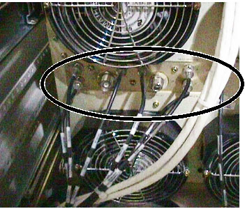
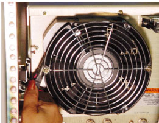
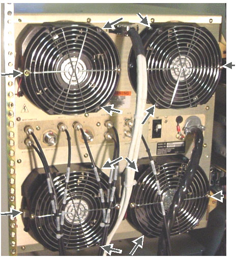
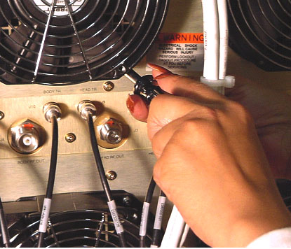
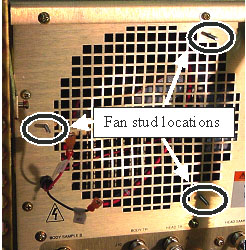
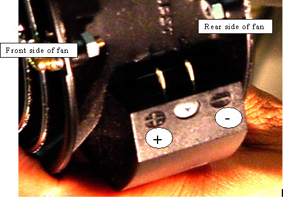

Operating Documentation
Direction 5440000, Rev# 5
Signa HDxt Service Methods
Module Version 2.0, Version Date 12/1/09
Operating Documentation |
| Required Persons | Preliminary Reqs | Procedure | Finalization |
|---|---|---|---|
| 1 | Not Applicable | 45 mins | 20 mins |
Later RF amplifiers with the serial numbers 31 and above require a fan replacement process that is different than that used for earlier RF amplifiers. Use this document for Fan Replacement for Later (serial numbers 31 or above) SRFD2 Amplifiers. Use Fan Replacement For Early SRFD2 Amplifiers ONLY on an RF amplifier with a serial number of 0001 to 0030. See 1.5T SRFD2 RF Module Fan Replacement for any questions about determining which serial numbers apply. The RF amplifier serial number is marked on a factory sticker attached to the rear of the RF amplifier.
| Item | Qty | Effectivity | Part# | Manufacturer | |
|---|---|---|---|---|---|
| 7/32 inch socket and driver | 1 | - | - | - | |
| ||||
| ELECTROCUTION Hazard! | ||||
| POWER NOT REMOVED FROM THE SRFD2 CABINET BEFORE ATTEMPTING TO SERVICE THE UNIT | ||||
| REMOVE POWER FROM THE SRFD2 CABINET BEFORE ATTEMPTING TO SERVICE THE UNIT. VERIFY THAT THE RFI/AMP AND SSM BREAKERS ON THE FRONT OF THE PDU ARE OFF. For RFS Cabinets, verify that the RF/Systems Cabinet and RFI/AMP breakers on the Front of the PDU are OFF. LOCK AND TAG OUT THE PLEXI-GLASS COVER ON THE FRONT OF THE PDU. |
| Condition | Reference | Effectivity |
|---|---|---|
For the SRFD2 Cabinet:SRFD2 Cabinet Power Lockout and Tagout. | - | - |
For the RFS Cabinet:Lockout / Tagout RF Systems Cabinet and RF Amplifier | - | - |
Anti-tip legs have been installed on the front of the cabinet | - | - |
If either of the lower two fan units needs replacement then disconnect all the RF coaxial cables shown in Illustration 1. Confirm that the labeling on each cable matches the port to which it is connected before removing the cable.
Illustration 1: DISCONNECT RF CABLES

Locate the red and black power spade leads to the failed fan. Use needle nose pliers to carefully grasp the lower body of the spade lead connector (NOT THE WIRE!) and then pull each spade lead connector loose from the fan. See Illustration 2.
Illustration 2: FAN POWER LEAD REMOVAL USING NEEDLE NOSE PLIERS

Each fan is held in place with 3 nuts on 3 threaded studs mounted on the RF amplifier chassis. The location of each of the fan nuts is shown in Illustration 3
Illustration 3: LOCATION OF FAN NUTS

Use the 7/32” socket, extension, and drive handle to remove each of the 3 nuts from the failed fan. See Illustration 4
Illustration 4: FAN POWER LEAD REMOVAL USING NEEDLE NOSE PLIERS

Pull the fan away from the RF amplifier. SeeIllustration 5.
Illustration 5: FAN REMOVED FROM RF AMPLIFIER

Obtain the replacement fan and notice that the fan power lead spade connectors are polarized. See Illustration 6
Illustration 6: POLARIZED FAN POWER SPADE LEADS

Before affixing replacement fan to RF chassis, first connect fan power leads to fan so that black (negative) lead connects to rear spade lead on fan while red (positive) lead connects to front space lead on fan
Place replacement fan over threaded studs on RF chassis and use fingers to thread nuts one or two turns onto stud. Threading the nuts in this way allows less opportunity for dropping them into the cabinet.
Once all nuts are threaded onto studs then use 7/32” socket, extension, and drive handle assembly to tighten nuts and secure fan to RF chassis
Reconnect any coaxial cables removed earlier to rear of RF amplifier.
Remove Lockout/Tagout hardware from PDU.
Place power breaker on rear of RF amplifier into up (ON) position. Note that fans all rotate in same clockwise direction. If replacement fan does not rotate in correct direction then power leads are swapped. This must be corrected or early amplifier failure may result.
Perform one head and body scan to confirm that the system is fully operational